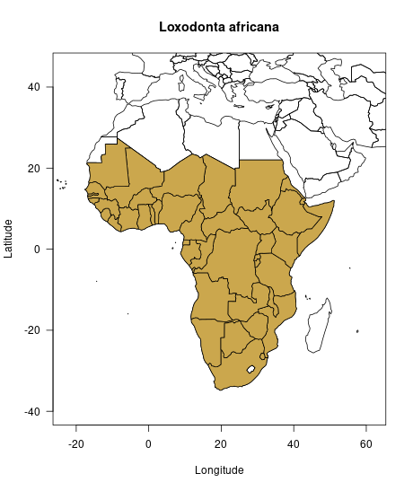

Study case: the African bush elephant (*Loxodonta africana*)
rcites team
10-08-2018
Source:vignettes/b_elephant.Rmd
b_elephant.RmdIntroduction and setup
In the vignettes “Get started with rcites”, we explained how to get a token and set it up for general access to the CITES Species+ database. Also, we very briefly introduced to how to code the key features of rcites. With this article, we aim to further introduce to the functionality and workflows of rcites. For this, we use the African bush elephant (Loxodonta africana, hereafter “elephant”) as a case study. The elephant not only is a highly endangered species that is illegally traded globally but also a flagship species of nature conservation and the logo species of CITES.
We start with a basic set up: we load the package and set the token:
Retrieve the taxon id
In order to access information about the elephant, we first need to retrieve its Species+ taxon identifier. For this, we use the spp_taxonconcept() function and the elephant’s scientific name, Loxodonta africana, as query_taxon argument.
elephant_taxonconcept <- spp_taxonconcept(query_taxon = "Loxodonta africana")#> ℹ Retrieving info from page 1 ........................ ✔
elephant_taxonconcept#>
#> ── General info - CITES ($general): ──────────────────────────────────────────────────────────────────────────────────
#> # A tibble: 1 × 8
#> id full_name author_year rank name_status updated_at active cites_listing
#> <chr> <chr> <chr> <chr> <chr> <dttm> <lgl> <chr>
#> 1 4521 Loxodonta africana (Blumenbach, 1797) SPECIES A 2021-10-13 13:12:58 TRUE I/II
#>
#> ── Classification ($higher_taxa): ────────────────────────────────────────────────────────────────────────────────────
#> # A tibble: 1 × 6
#> id kingdom phylum class order family
#> <chr> <chr> <chr> <chr> <chr> <chr>
#> 1 4521 Animalia Chordata Mammalia Proboscidea Elephantidae
#>
#> ── Synonyms ($synonyms): ─────────────────────────────────────────────────────────────────────────────────────────────
#> # A tibble: 1 × 4
#> id full_name author_year rank
#> <int> <chr> <chr> <chr>
#> 1 37069 Loxodonta cyclotis (Matschie, 1900) SPECIES
#>
#> ── Common names ($common_names): ─────────────────────────────────────────────────────────────────────────────────────
#> # A tibble: 10 × 3
#> id name language
#> <int> <chr> <chr>
#> 1 4521 Ndovo SW
#> 2 4521 Tembo SW
#> 3 4521 Haathi UR
#> 4 4521 Elefante PT
#> 5 4521 Slon RU
#> 6 4521 Elefant NO
#> 7 4521 Olifant NL
#> 8 4521 Afrikaanse olifant NL
#> 9 4521 Elefante africano ES
#> 10 4521 afrikansk elefant SV
#> -------truncated-------
#>
#> Information available: $all_id, $general, $higher_taxa, $accepted_names, $common_names, $synonyms, $cites_listingsAs the first column of the output shows, the taxon identifier of the elephant is 4521. This taxon_id will be used for all next function coding.
Beyond the taxon identifier, the output also provides information about the taxon classification and other names, both synonyms and common names if any, in different languages.
Map the elephant’s distribution
Before giving more insights into the legislation status of the elephant, we have a look at where the elephant actually occurs naturally. For this, we can access the elephant’s distribution information with the spp_distributions() function. Thereafter, we can map the distribution with the help of the rworldmap package.
library(rworldmap)
par(las = 1)
elephant_distr <- spp_distributions(taxon_id = "4521",
verbose = FALSE)$distributions
map2 <- joinCountryData2Map(elephant_distr,
joinCode="ISO2",
nameJoinColumn = "iso_code2",
nameCountryColumn = "name")#> 42 codes from your data successfully matched countries in the map
#> 0 codes from your data failed to match with a country code in the map
#> 201 codes from the map weren't represented in your data
plot(c(-23, 62), c(45, -40),
type = "n",
main = "Loxodonta africana",
xlab = "Longitude",
ylab = "Latitude")
plot(map2, add = TRUE)
plot(map2[!is.na(map2$iso_code2),], col = "#cba74d", add = TRUE)
Access the legislation status
The functions spp_cites_legislation() and spp_eu_legislation() provide access to the legislation status information of the elephant.
First, we have a look at the CITES legislation status:
elephant_cites <- spp_cites_legislation(taxon_id = "4521")#> ℹ Now processing taxon_id '4521'...................... ✔
elephant_cites#>
#> ── Cites listings ($cites_listings): ─────────────────────────────────────────────────────────────────────────────────
#> # A tibble: 10 × 6
#> id taxon_concept_id is_current appendix change_type effective_at
#> <chr> <chr> <lgl> <chr> <chr> <chr>
#> 1 30344 4521 TRUE I + 2017-01-02
#> 2 30115 4521 TRUE II + 2019-11-26
#> 3 32160 4521 TRUE II R+ 2019-11-26
#> 4 32161 4521 TRUE II R+ 2019-11-26
#> 5 32156 4521 TRUE II R+ 2019-11-26
#> 6 32158 4521 TRUE II R+ 2019-11-26
#> 7 32154 4521 TRUE II R+ 2019-11-26
#> 8 32159 4521 TRUE II R+ 2019-11-26
#> 9 32157 4521 TRUE II R+ 2019-11-26
#> 10 32155 4521 TRUE II R+ 2019-11-26
#>
#> ── Cites quotas ($cites_quotas): ─────────────────────────────────────────────────────────────────────────────────────
#> # A tibble: 10 × 10
#> id taxon_concept_id quota publication_date public_display is_current unit geo_entity.iso_code2 geo_entity.name
#> <chr> <chr> <chr> <chr> <lgl> <lgl> <chr> <chr> <chr>
#> 1 25337 4521 0 2021-02-03 TRUE TRUE <NA> KE Kenya
#> 2 25348 4521 0 2021-02-03 TRUE TRUE <NA> LR Liberia
#> 3 25355 4521 0 2021-02-03 TRUE TRUE <NA> MW Malawi
#> 4 25358 4521 0 2021-02-03 TRUE TRUE <NA> ML Mali
#> 5 25375 4521 0 2021-02-03 TRUE TRUE <NA> MZ Mozambique
#> 6 25390 4521 0 2021-02-03 TRUE TRUE <NA> AO Angola
#> 7 25414 4521 0 2021-02-03 TRUE TRUE <NA> NE Niger
#> 8 25431 4521 0 2021-02-03 TRUE TRUE <NA> NG Nigeria
#> 9 25554 4521 100 2021-02-03 TRUE TRUE <NA> TZ United Republic…
#> 10 25555 4521 300 2021-02-03 TRUE TRUE <NA> ZA South Africa
#> # … with 1 more variable: geo_entity.type <chr>
#> -------truncated-------
#> Field(s) not printed: notes, url
#>
#> ── Cites suspensions ($cites_suspensions): ───────────────────────────────────────────────────────────────────────────
#> # A tibble: 10 × 8
#> id taxon_concept_id start_date is_current applies_to_import geo_entity.iso_code2 geo_entity.name geo_entity.type
#> <chr> <chr> <chr> <lgl> <lgl> <chr> <chr> <chr>
#> 1 17621 4521 2014-08-11 TRUE TRUE US United States … COUNTRY
#> 2 17620 4521 2014-08-11 TRUE TRUE US United States … COUNTRY
#> 3 17686 4521 2014-10-10 TRUE TRUE US United States … COUNTRY
#> 4 18709 4521 2010-08-16 TRUE TRUE ZW Zimbabwe COUNTRY
#> 5 15983 <NA> 2011-01-19 TRUE FALSE DJ Djibouti COUNTRY
#> 6 22079 <NA> 2018-01-30 TRUE FALSE DJ Djibouti COUNTRY
#> 7 22076 <NA> 2018-01-22 TRUE FALSE LR Liberia COUNTRY
#> 8 22132 4521 2018-03-19 TRUE FALSE AU Australia COUNTRY
#> 9 23168 <NA> 2019-07-04 TRUE FALSE SO Somalia COUNTRY
#> 10 24947 4521 2020-05-26 TRUE TRUE CN China COUNTRY
#> -------truncated-------
#> Field(s) not printed: notes, start_notification.name, start_notification.date, start_notification.urlWe can do the same for the elephant’s legislation status in the European Union:
elephant_eu <- spp_eu_legislation(taxon_id = "4521")#> ℹ Now processing taxon_id '4521'...................... ✔
elephant_eu#>
#> ── EU listings ($eu_listings): ───────────────────────────────────────────────────────────────────────────────────────
#> # A tibble: 2 × 6
#> id taxon_concept_id is_current annex change_type effective_at
#> <chr> <chr> <lgl> <chr> <chr> <chr>
#> 1 31788 4521 TRUE A + 2019-12-14
#> 2 31876 4521 TRUE B + 2019-12-14
#>
#> ── EU decisions ($eu_decisions): ─────────────────────────────────────────────────────────────────────────────────────
#> # A tibble: 10 × 15
#> id taxon_concept_id start_date is_current eu_decision_type… eu_decision_type… geo_entity.iso_c… geo_entity.name
#> <chr> <chr> <chr> <lgl> <chr> <chr> <chr> <chr>
#> 1 26285 4521 2015-04-09 TRUE Positive POSITIVE_OPINION ZW Zimbabwe
#> 2 25508 4521 2014-09-03 TRUE Positive POSITIVE_OPINION BW Botswana
#> 3 11682 4521 2012-02-23 TRUE Positive POSITIVE_OPINION NA Namibia
#> 4 24825 4521 2014-05-28 TRUE Positive POSITIVE_OPINION ZA South Africa
#> 5 27017 4521 2015-09-15 TRUE Positive POSITIVE_OPINION ZM Zambia
#> 6 27360 4521 2016-06-27 TRUE Negative NEGATIVE_OPINION MZ Mozambique
#> 7 35567 4521 2020-03-03 TRUE <NA> <NA> MZ Mozambique
#> 8 30377 4521 2017-06-21 TRUE Negative NEGATIVE_OPINION TZ United Republic…
#> 9 30553 4521 2017-06-21 TRUE Positive POSITIVE_OPINION TZ United Republic…
#> 10 32143 4521 2019-10-17 TRUE Suspension (a) SUSPENSION CM Cameroon
#> # … with 7 more variables: geo_entity.type <chr>, start_event.name <chr>, start_event.date <chr>, source.code <chr>,
#> # source.name <chr>, term.code <chr>, term.name <chr>
#> Field(s) not printed: notes, eu_decision_type.description, start_event.urlWith the combination of map2 and the legislation data, one might be able to illustrate the elephant’s trade directions. This and other use examples of the rcites data output will be added bit by bit.
Access the elephant’s Species+ reference data
Last but not least, it is important to identify which references the Species+ information about the elephant is based on. For this, we can access the Species+ reference data with the spp_references() function.
elephant_refs <- spp_references(taxon_id = "4521", verbose = FALSE)
elephant_refs#>
#> ── References ($references): ─────────────────────────────────────────────────────────────────────────────────────────
#> # A tibble: 10 × 3
#> id citation is_standard
#> <chr> <chr> <chr>
#> 1 10265 Anon. 1978. Red data book: Mammalia. IUC [truncated] FALSE
#> 2 6344 Barnes, R. F., Agnagna, M., Alers, M. P. [truncated] FALSE
#> 3 17013 Blanc, J.J., Thouless, C.R., Hart, J.A., [truncated] FALSE
#> 4 6371 Burton, M. P. 1994. Alternative projecti [truncated] FALSE
#> 5 6532 Douglas-Hamilton, I. 1987. African Eleph [truncated] FALSE
#> 6 6534 Douglas-Hamilton, I. 1987. African Eleph [truncated] FALSE
#> 7 6825 Jackson, P. 1982. Elephants and rhinos i [truncated] FALSE
#> 8 7224 Meester, J. and Setzer, H. W (eds.) 1974 [truncated] FALSE
#> 9 7609 Parker, I. and Amin, M. 1983. Ivory cris [truncated] FALSE
#> 10 19397 Parker, I.S.C. and Martin, E.B. 1982. Ho [truncated] FALSE
#> -------truncated-------
dim(elephant_refs$references)#> [1] 15 3